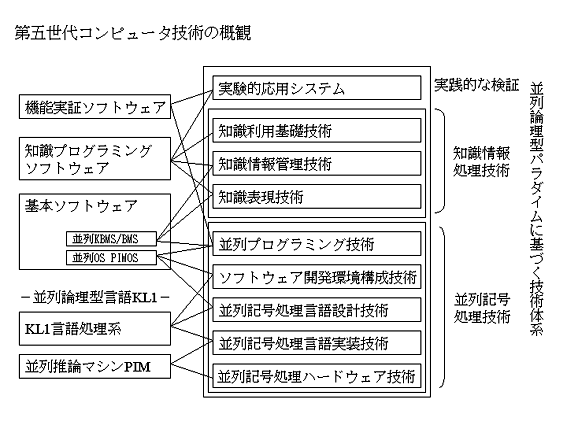
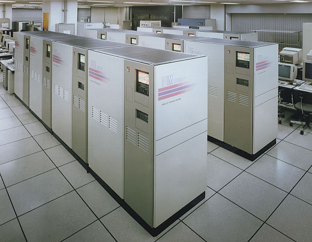
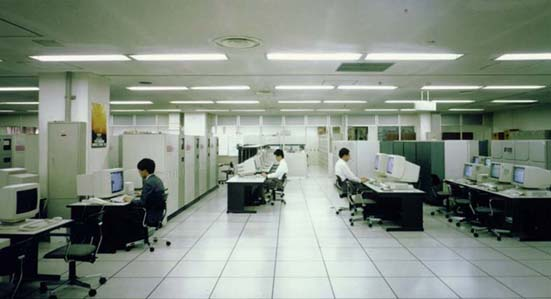
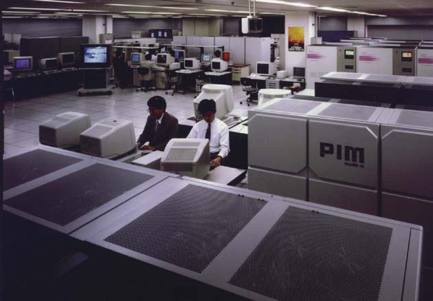
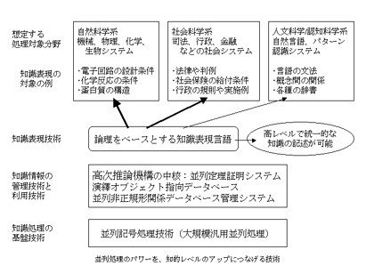
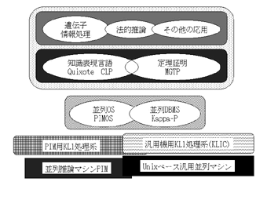

タンポポの花のたとえ
ご紹介いただきました内田です。先ほどの渕さ んのお話にもありましたように、第五世代プロ ジェクト１１年間の後を受けて、後継プロジェクト の２年間、渕さんの後をお引き受けすることにしま した。
先ほど、渕さんが１１年間の総括を非常によく整 理してお話しして下さいましたが、私はさらに具 体的に１１年間の成果を説明するとともに、２年間の 後継プロジェクトをどのように進めていくかにつ いてお話ししたいと思います。
物にたとえてみるとわかりやすいと思いますの で、タンポポの花のようなものを考えていただき たいと思います。最近、ＩＣＯＴは、遺伝子の情報処 理を手がけていまして、私もそのグループの立ち 上げの段階で、それなりに生物の勉強をしまし た。タンポポの種から芽が出て花が咲くというと ころは、第五のプロジェクトで言いますと、当初 の１０年計画に対応すると恩います。先ほど渕さん の話にもありましたように、最後に何とか花を咲 かせることができたと考えているわけです。次 は、その花をどうするかという話になります。生 物、特にタンポポのようなものはよくできていま して、花は枯れますが、その後、その情報すべて を再び種の中に仕込んで、さらにその種が飛ぶよ うに、綿毛のついた飛行装置という分配・拡散装 置をつけて子孫を広めていくわけです。第五世代 のプロジェクトも、その成果のでき上がった時点 でバタッと終わってしまうと成果が世の中に広 まっていかない、と最後のほうで思いまして、タ ンポポの綿毛ではありませんが、何とかその成果 がより広く世の中に広まり、いろいろなところに 辿り着いて新たな芽を出す、そんな種子を作るよ うなプロセスをぜひ後ろにつけ加えたい、と思っ たわけです。
それは、その前の段階で、私や若手研究者が自 分たちの望みどおりの研究開発成果が得られたこと を反映しているのかもしれません。ということ で、これからの私の話は、咲いた花がどんなもの であったのかということ、それから、遺伝情報を 全部種子に詰め込んで、つまりわれわれで言いますと 成果の情報を詰め込んで、どのように世の中に広 めていくか、さらに広まった光で、どのように根 つき、どのような花が咲くだろうかというような 話としてお聞き頂きたいと思います。
第五世代コンピュータの成果を、いろいろ分析 致しました（図１）。

最終成果の報告
これは、皆さんのお手元にある、通産省の最終 成果報告書の最初のぺージに書かれている絵で す。第五世代の成果は、最後に第五世代コン ピュータ・プロトタイプシステムと呼ばれるも のに、ほとんどインテグレートされております。 そのシステムが、この図の左側でして、一番下に 並列推論マシンPIMというのがあり、その上に並列 論理型言語KL1があります。さらにその上に基本ソ フトウェアとして、世界初の本格的な並列OSであ る、PIMOS、それからその一部をなす並列DBMS があります。その上に知識ベース管理ソフトがく るわけですが、この部分は最後の出来上がりの具 合いから、ほとんど知識プログラミング・ソフト ウェアの一部として認識されています。この辺ま では、しっかりツールとなるように作ってあり ます。それからこれをもとに、どのようにわれわれの 社会にある知識を計算機の上に載せていくかとい う、知識処理の本来のテーマである知識プログラ ミングの諸技術、それを具現化したソフトウェア があります。さらにその上、場合によってはその 横かもしれませんが、さまざまな機能実証ソフト ウェアを作ってきました。このようなものが、第 五世代コンピュータのプロトタイプシステムとい う形でまとめられました。
この中に含まれている個々の要素技術がどのよ うなものであったかを、より広いコンピュータサ イエンスのエリアから眺めてみてまとめたのが中 央の部分です。
一番下にあるのが並列記号処理向 きのハードウェア技術。ＩＣＯＴが目指したコン ピュータは、世の中で現在広く使われている大規 模科学技術計算というような方向ではなく、より 汎用的な事務処理一般を含めたものです。それ は、聞きなれない言葉かも知れませんが、学問的 には記号処理とひとまとめに呼ばれています。 ＩＣＯＴが目指したのは、記号処理向きのハードウェア 技術といえます。それから、そのハードウェア の上にあるのが言語でして、このプログラミング 言語というのが、コンピュータシステムではいつ もおへそみたいなもので中核を占めています。 われわれの場合は、並列論理型という、並列処理の高 級言語を採用しました。その言語の実装技術、ま た、その言語をどのように設計するかという言語 仕様の作り方の技術、それからその言語を使う人 にどうやって心地よい開発環境を提供するかと いった言語関連のプログラミング環境を作る技 術、この三つの技術を開発しました。さらにその 技術および通常の並列処理の技術を用いて、問題を どのように定式化して並列処理のソフトを作って いくかというプログラミング技術、ここまでが主 要な技術としてリストアップされています。この 辺をひとまとめにして並列記号処理技術と分類で きます。第五世代の技術は並列推論というキー ワードで述べてきましたが一般的なコンピュータ サイエンスのエリアでは「並列記号処理技術」 と呼ばれるものです。
一方、知識をどのように表現し、どのようにため 込んで知識ベース化し、さらにそれをどうやって 利用していくかという技術があります。こちらは まだ未発達で、並列記号処理技術のほうがかなり 工学的完成度を高めているのに対して、こちらは 依然として基礎研究の段階にあります。しかしな がら、そこでつくられた個々の要素技術は、十分 評価するに足る形にまとめられています。われわれは この辺をひとまとめにして、「知識情報処理技 術」と呼んでいます。この上にある実践的な検証 システムというのは、一部はこの並列記号処理の 技術で、もう一方は知識情報処理の技術の実践的 な検証となっています。ここは、約ニ十数種の応 用システムがあります。
この並列記号処理技術および知識情報処理技術の それぞれについて、さらに展開して説明したいと 思います。
まず、並列記号処理技術です（図２）。
|
１）．並列記号処理技術（汎用的な大規模並列処理技術） -- 成果の概要 -- 知識処理、記号処理の高度並列化を達成
|
並列処理技術は、従来のコンピュータ技術の流 れを見ると、科学技術計算の分野ではかなり大規 模に使われてきました。このような大規模科学技 術計算においては、計算の構造が予測可能なの で、多数のコンピュータを使った場合の負荷配分 などをかなり前もって準備して決めていけるとい うことで、専門的に言うと、静的な最適化が図れ るといわれていました。それに対して、記号処 理、知識処理の分野では、囲碁のプログラム、そ の他ゲームのプログラム等に見られるように、相 手の打つ手によって次に何をするかが非常に変わ り得る。一般的に、ＡＩの問題は、定理証明、その 他を含めて探索問題に落ちるわけですが、探索の 範囲が動的にコロコロ変わることから、並列処理 の計算構造の組み立て予測が難しい。したがって、 最適化が動的に行われなければならないという問 題があるわけです。
この動的に行われていく部分 を、プログラムとしてどう記述できるか、それか らさらにOSのような管理ソフトがどのようにそれ を効率よく管理していくかが、重要な問題として 捉えられてきました。これが並列処理の問題の本 質です。ここのところを解決したというのが第五 世代プロジェクト、すなわちこの並列記号処理技 術の成し遂げた大きなブレイクスルーであるとい うことができると思います。「高度並列化を達 成」とシンプルに書いてありますが、ここが非常 に大きな成果だと主張しているわけです。
説明が相前後しますが、従来からコンピュータ の主要技術であった汎用大型機の技術が、ワーク ステーンョンやパソコンに徐々に地位を譲り渡 し、分散処理の世界が構成され、その一方で、並 列科学技術計算のほうはスーパーコンから、より 汎用的な並列マシンに姿を変えつつあります。マー ケットが、大規模並列、分散処理の時代になっ た。その中で、再び大きなデータベースサーバな どという形で、並列マシンがその中核に据えら れ、新たなスーパーコンピュータとなる状況が起 こっているわけです。そのような汎用並列処理の 時代がやってきているのに、大規模並列コン ピュータをプログラムする技術は、必ずしも市場 にないという現実が一方で起こっています。
第五世代の技術は、知識処理をするというシー ズオリエンテッドなところからスタートしました が、計算構造の予測不可能な問題を扱うというこ とから、期せずして汎用的並列処理の技術を生み 出すに至ったわけです。したがって、われわれ々の予測 したところとは別の原因で、マーケットにおいて 分散処理、並列処理がボトムアッブに起こってき ており、われわれの大規模汎用並列処理の技術が、そ のようなニーズとぴったり合致して、さらに発展 を続けるという可能性が見えてきています。こう いう現実もとらえまして、後継プロジェクトで は、タンポポの綿毛を作るというような話が必 要となってくることになります。
並列推論マシン「ＰＩＭ」
次に、綿毛にする中身は何かを説明します。記 号処理、知識処理の技術は、並列処理を用いるこ とですごく速くなるという人と、速くなるわけな いという人が相半ばしていました。しかしＩＣＯＴ は、５００台規模で汎用マシンの５０ないし１００倍とい う、プロセッサ台数にほぼ比例した処理速度を実 現できました。実際、この値は私のような中核に 位置していた者にとっても、予想を上回るもので した。
また、定量的な評価は、なかなか難しいで すが、KL1という言語によるソフトウェアの作成効 率がよいということがあります。並列推論マシン の規模が６４台、１２８台、２５６台、５１２台と増えていく のに対して、ＩＣＯＴの応用プログラムを書いていた チームは、約２週間ぐらいの遅れでソフトウェアの 拡張を行っていったことから見ても、KL1のソフト ウェア生産性が高いというのを肌身で感じていま す。それがどのぐらい高いかというのが、今後い ろいろなところで定量的に評価されるといいなと 思っています。ということで、従来技術に欠けて いた、このような汎用並列処理の技術を確立で き、本格的な並列処理の時代の幕開けに先駆ける ことができたと、自画自賛ではあるかも知れませ んが、総括しています。
このような並列記号処理の部分について、さら に具体的に紹介していきたいと思います。詳細 は、近山隆第一研究部長及び新田克巳第二研究部長、長 谷川隆三次長等による、本日午後の講演で述べられま す。私は、そのアウトラインだけ述べたいと思い ます。
まず、並列推論マシンPIMですが（図３）、これ は５つのモデルをつくりました。
|
１） 並列推論マシンＰＩＭ ＰＩＭ／ｐ ５１２ＰＥ、ＰＩＭ／ｍ ２５６ＰＥ＋１２８ＰＥ、 ＰＩＭ／ｃ ２５６ＰＥなど、５モデル 大規模モデルでは、１００ＭＬＩＰＳ以上の性能 知識処理の応用ソフトウェア研究ツールとして安定稼働 インターネット経由で国内、海外より利用可能 |
それぞれに名前がついていて、PIMモデル-p,-m, -cなどとなっています。これらは、それぞれ異なる アーキテクチャを持っていて、ハードウェアや アーキテクチャの研究要素がたくさん注ぎ込まれ ています。しかしながら、すべてのモデルがKL1およ びPIMOSという一つの言語、一つの環境をサポー トするので、ユーザは自分のプログラムをPIM/pに 載せたり、PIM/mに載せたりして、自分のプログ ラムの計算構造とアーキテクチャのマッチングの 具合いを見るような研究ができます。
性能的に は、先程も申し上げましたが、現在のワークス ナーンョンが今一番速いマシンになっているわけ ですが、１００MIPSクラスがあります。そういうワー クステーション１台に比べて、５０倍から１００倍の性 能を達成しています。ただ、こちらのほうは５１２台 つぎ込んで１００倍です。早い話が、C言語で書かれ たプログラムを１台のワークステーションで実行す るのと、PIMのプロセッサを５台持ってきたのと、 性能が同じぐらいであるということです。PIMのプ ログラムはKL1で書いてあるわけですが、そのオー バーヘッドが５倍以内で済んでいるということを示 しているわけで、KL1で書くと、台数が１００台、２００ 台になっても追随できる。一方、Cで書かれたプロ グラムは、ワークステーション１台で終わりで、拡 張性はないわけです。並列処理の時代を迎えて、 このKL1という言語、およびこのPIMというマシン が非常に有効に働くということがおわかりいただ けるかと思います。
このPIMは試作機ですが、担当いただいた各メー 力の工場で実装していただいたこともあって、非 常に安定して稼働し、応用ソフトウェアの開発ツー ルとしては十分な安定性を持っています。国際共 同研究等もこの上で行われていまして、インター ネット経由で海外、国内から使用可能になってい るという状況です。 ここで、写真をお見せします（図４）。ここにあ るのがPIMモデル-pというマシンです。これは、最 大構成５１２台、一つの筐体に３２台のプロセッサが 入っています。このモデルの特徴は、要素プロ セッサを８台ごとにクラスタという単位にまとめて いることです。したがって、５１２台で６４個のクラス タがあるように見えます。個々のクラスタの中 は、自動負荷分散という機能があり、プログラマ は８台が１個の非常にパワフルなコンピュータであ ると見なして負荷配分をします。８台の中の細かな 負荷配分は自動的に行われます。１筐体３２ブロセッ サで、１列４筐体で１２８台、これが４列まで拡張でき、 ５１２プロセッサを構成しています。

図４ ５１２台の要素プロセッサからなる並列推論マシン PIMモデル-p(PIM/p)
これ（図５）は、PIMモデル-mと称するもので、 こちらはさっきのクラスタのような構造を持って おらず、１６×１６の単純な碁盤の目の構造になって います。

図５ ２５６台の要素プロセッサからなる並列推論マシン PIMモデル-m(PIM/m)
PIM/mでは、ソフトウェアを書く人が２５６台の１個 １個のプロセッサを意識し、負荷配分していきま す。構造が単純なので、ソフトウェアのモデルを 簡単に書いて、それをマシンの上に直接載せま す。どこが良かったか悪かったかというマッピン グのあり方を見るときも、単純であるがゆえに実 験がしやすくなっているわけです。このモデル は、２５６PEが最大構成ですが、このモデルのほかに １２８プロセッサの小さいモデルも作っています。 ここに示しているのは１筐体に３２台、４筐体で１２８ 台。２列で２５６台です。
以上のようなハードウェアが、現在のＩＣＯＴのコ ンピュータパワーを支えています。本日のデモで も、三田国際ピルの計算機室（図６，７）から、ネッ トワーク経由でPIMを使って、プレゼンテーション の合間にさりげなくリアルタイムデモが挿入され るという仕掛けになっています。

図６ 稼働中の並列推論マシン PIM
向かって左側が、５１２台規模のPIMモデル-p(PIM/p) 右側が、２５６台規模のPIMモデル-m(PIM/m)
リアルタイムデモがあまりにもスムーズに挿入 されると、アニメーションの絵が入ったのかなと いう感じで、あまりその辺の断続が明確でない分 だけ、本物のデモだというリアリティに欠ける という問題がありますので、注意してご覧いただ きたいと思います。

図７ ＩＣＯＴマシンルームの並列推論マシン PIM
写真の手前に、PIMモデル-m(PIM/m)、右奥に PIMモデル-p(PlM/p)、さらに左の端末群の奥に PIMモデル-c(PIM/c)が見える
基本ソフトウェアと言語
さて、並列記号処理技術のもう一つのポイント である基本ソフトウェアと言語について、もう少 し紹介したいと思います（図８）。
２） 並列論理型ＫＬ１と基本ソフトウェア
|
KL1は、これまでＩＣＯＴがずっと開発を続けてき た言語ですが、この言語は並列処理の高級言語で あり、同期メカニズムはデータフローと称するメ カニズムによっています。したがって、ユーザは その同期の個々について関与する必要がありませ ん。また、メモリについては、仮想的には無限大 あるということでプログラムが書けます。した がって、そこには裏方として分散ガーベージ・コ レクションのメカニズムが組み込まれています。 このような高級言語によって、初めてユーザは何 百台ものマシンをプログラムする自由度を与えら れるということになります。
この言語の特徴のもう一つは、実際にアルゴリ ズムを記述する部分、および実際にできたプログ ラムを２５６台なり５１２台のマシンに割り当てる部分 が、別々の二段構えにプログラムできることです。 ユーザは、まずアルゴリズムを記述して、さらに その後、ブラグマと称する指定をつけ加えること で、自分のプログラムのどこの処理を、どのプロ セッサに割り振るかを指定します。第１段階では、 通常のアルゴリズムのチェックを行い、第２段階で は、ランタイムモニター等を使って、プロセッサ の上の負荷配分がどのように行われているかをモ ニタリングツールを見ながら調整し、最高効率を 得るというパフォーマンス・デバッグを行いま す。この２段階のステップによって、プログラムが できるようになっています。
並列OSのPIMOSには、ユーザが使うメモリやプ ロセッサ等の資源管理をできるだけ分散してやる ようなメカニズムがうまく組み込まれており、そ れによって管理のボトルネックを解消していま す。同時に、アルゴリズムのデバッグや、パ フォーマンスのデバッグを効率よく行う環境がこ の上に載っています。そのほか、基本ソフトの一 部として、並列のデータベース管理ソフトウェア Kappaが実装されています。例えばPIMモデル-mで すと、２５６台のプロセッサとともに８０ギガバイトの メインメモリがあり、これを一種のディスク キャッシュとして用いることで、非常に高速の検 索が可能となります。このような並列データベー スのアクセス、管理が実際に行えるようになって いるのが、このKappaです。
では、次にこのような基本ソフトウェアとPIMの 組合せによって、どのくらいの高速化が行われた かを紹介したいと思います（図９）。

先ほど、台数に比例した並列処理の速度向上とい う話をしました。これについては、どのくらい速く なるだろうかという議論が、ＩＣＯＴ関係者の間で 多々ありました。並列処理のソフトウェアをつくる ときの一つのアナロジーとして、会社の組織などを 思い浮かべるわけです。従業員が１００人いるような 会社を非常にうまく切り盛りしたとして、１人のと きに比べてどのくらい生産性が上がるだろうかとい うのが、並列処理の効率を考えるときの一つのアナ ロジーです。人間の会社と同じで、計算機の上で大 きな一つの仕事を与えられると、まずそれを分ける わけです。誰かの仕事が終われば、そこに新たな仕 事を供給する。終わった仕事の結果の取りまとめに 走り回るというような管理のオーバーヘッドまで含 めると、１００人のうち６０人ぐらいがフル稼働してい ればよくて、場合によっては３０％ぐらいでもいいか なと考えがちなわけです。
次に定理証明問題の速度向上についてお話しし ます。定理証明という問題は、並列に処理できる 多くの部分に分けられますが、大規模科学技術計 算のような方程式がきちんとたっているわけでは ありません。したがって、動的に負荷の再配分を 繰り返す必要があります。それを徹底して行った ということで、最終的にこのような良好な成果が 得られたわけです。これは、２５６台のプロセッサを 使った例です。これですと、２２０倍ぐらいの速度向 上が得られているわけです。こういう結果に勇気 づけられて、並列のCADをやっている人や、法律 の推論システムをつくっている人が、いろいろな ノウハウをお互いに教え合い、プロセッサ台数に かなりよく比例した速度向上率が最近では得られ るようになっています。
したがって、記号処理というような問題は、 そのなかでは計算構造が非常に 非定型的で予測しにくいとはいっても、プログラ ミング言語やOSが徹底した動的な負荷配分やその 他の最適化を図ることで、このような台数にほぼ 比例した速度向上が得られることがかなり確信で きるまでになってきました。このような確信が、 後ほど申し上げます、より本質的な知識処理の問 題ヘアタックするときの前提を、大幅に変えるこ ととなります。
以上で、記号処理の部分を終わりまして、知識処 理の説明に移りたいと思います（図１０）。
|
-- 成果の概要（１） -- 従来技術より数歩先んじた汎用並列処理の応用を開発 ⇒応用領域を、工学分野から、広く自然科学や、社会科学などの分野に 広げ、知識処理の本質的な問題へ踏み込む |
知識処理へのアプローチ
まず、ＩＣＯＴにおける知識処理へのアプローチで すが、前期からいろいろな基礎研究を行ってきま したが、並列処理の技術が固まるにつれて、その 前提が変わってきました。要するに、マシンが出 来たし、並列記号処理のパワーも上がったから、 何かかっこのいい知識処理の応用はないかという 発想が出てきたわけです。もちろん、それ以前か ら知識処理の応用でエキスパートシステムなどを 手がけている人はいたわけですが、それとは別 に、１，０００台規模のマシンが動くと、そのマシンの 上に載せるだけのボリュームのある応用がないと いうことが、中期の終りの頃から叫ばれ始めたわ けです。
考えてみますと、科学技術計算の応用分野には実 際に並列マシンがありますから、どんどん応用の人 が入ってきて大きい並列の応用プログラムが作られ たのに対して、もともと従来型機は記号処理は不得 意でしたから、大規模な並列応用の開発はなされて いないわけです。ということで、並列推論マシンを いっぱいにするような新しい応用を掘り起こそうと いう発想、つまり、自分たちで応用まで手がけよう という発想が出てきたわけです。
そういう発想から nいろいろ調べた結果、工学の分野には、VLSI-CAD などの応用が結構あることがわかったわけですが、 もう少しそれを広げようとして目についたのが、遺 伝子の情報処理でした。１９８８年ぐらいからヒトゲノ ムの解読計画がアメリ力で開始され、非常に大量の 遺伝子情報がデータベースに蓄えられるという状況 が起こってきた。この遺伝子、つまり、DNAの記 号列、もしくはタンパク質の記号列というのは、そ れがどのような意味、どのような構造を持つもので あるかは、わからないにもかかわらず、その読み取 り技術だけがどんどん進歩して、末解読の文字列が 山のようにたまるという状況が起こっていたわけ す。これには、暗号解読のような処理を必要としま すから、生物学サイドは記号処理のパワフルなマシ ンを求めていました。では、この辺をひとつ開拓し てみようということで、われわれは生物学的な 応用の研究を始めました。
さらにもう少し先へ行こうということで、法律 のエキスパートシステムの 研究を始めました。いろいろな判例、規則が山のよ うにあって、それらに基づいて新たな判断をすると いうことですから、これも大規模な知識ベースを基 本とした推論を必要とします。
このように応用の研究を進めてくると、同時 に、より本質的な知識処理の問題に踏み込むこと になります。この本質的な問題が何であるかは、 また後でお話ししたいと思います。
ＩＣＯＴの知識処理のもう一つの特徴として、PIMや PIMOSの記号処理技術の評価用、評価の検証用とい う形での知識処理であったことがあげられると言い ましたが、当然それ以前から、第五世代のプロジェ クトには知識処理研究をやる上での大方針があった わけです。それは何かと言うと、今さら耳ダコで しょうが、述語論理、すなわち論理に基づいて知識 を扱っていこう、ということです（図１１）。
|
述語論理に基づく知識表現の実用性を示し、種々の応用分野の知識ベース作成のための中核技術を確立 大規模並列処理のパワーを土台とした定理証明システム 演繹オブジェクト指向ＤＢ言語などの知識プログラミング言語知識処理、記号処理の典型的な応用例でそれを実証 ⇒学術領域の研究者、研究分野育成が次の課題 知識情報処理技術の将来展望を提示 |
論理に基づいて知識を扱うというのは、遠いギ リシアの昔からなされていたのですが、コン ピュータにのせて機械化する研究では不活発でし た。その一つの理由は、一般的に述語論理を証明 していく手段、手続きというのは非常に手間がか かるもので、従来の計算機では処理速度が遅く、 その論理自体をプログラミング言語として使うこ とができず、足踏みしていたのです。
ところが、第五世代プロジェクトでは、そうい う知識処理の技術の中に並列処理のパワーを持ち 込む前提でやってきました。その最初の突破口を 開いたのが、まさにこの並列定理証明システム だったということができるわけです。先ほどから、 世界最高速とか、定理証明システムが台数に比例 した処理速度向上を実現したと言いましたが、こ れは論理に基づく知識処理が、並列処理と結びつ くことで実用レベルに達し得るということを宣言 できたといいますか、明確にできたということで す。これは、非常に大きなことで、これによっ て、論理に基づく知識表現、これは専門的には演 繹的な知識表現とかディダクティブな言語と称す るわけですが、そのような言語が実用になるとい うことです。そこで次は、知識を記述するという ような側面から、その表現力がどうかというよう なことに研究のポイントが移っていくわけです。
研究者は、当初から演繹的な言語にそれなりの 見通しを持って研究を行っていたわけですが、わ れわれのような研究を管理する立場からいうと、こ れがものになるかどうかの一つの条件が、その言 語の効率的実装の可否にあったわけです。これで やっと条件が整ったといえるので、この辺をもっ と本格的に研究しようということになるわけで す。表現力を増すという立場からすると、現在い ろいろなところで流行語にもなっていますオブ ジェクト指向に基づく表現、これを組み合わせよ うということで、研究が進められました。
さらに先ほど申しました記号処理の応用の中 で、法律や遺伝子などの応用まで研究しますと、 だんだん知識処理、記号処理のユーザー側からの 要求が強く聞こえてきます。中でも、こういう論 理に基づく知識表現方式が有効であるということ が、まだ傍証でしかないかもしれませんが、示す ことができるようになりつつあります。この辺 は、第五世代プロジェクトの成果としてはまだ要 素技術レベルで、先ほどのKL1のプログラミング環 境のように、これこれの知識表現言語でこのよう に書いていただくと、エンジンとして定理証明の プログラムが動いて、皆さんは並列処理の中がど うなっているかは知らなくても、論理をべースに して書かれた知識表現がプログラムとして動いて しまいますよ、とは、まだいえないわけですが、 そういう方向が現実的であることを示し得たとい えます。そうすると、将来、コンピュータと生物 の、あるいは法律とコンピュータの両方にまたが る分野などの新たな学際的な研究分野が生まれ、 その立ち上げが、面白く、なおかつ難しい問題と して登場してくることが予想されるわけです。
次に、個々の課題の説明に移りますが、この辺 は午後にも説明しますから、簡単にしたいと思い ます（図１２）。
|
１） 知識プログラミング技術 並列定理証明システム（ＭＧＴＰシステム） ⇒世界最高速の定理証明システム 高水準の推論エンジンとして利用可能 演繹オブジェクト指向ＤＢ言語と知識ベース管理システム （Ｑｕｉｘｏｔｅシステム） ⇒述語論理に基づく知識の記述 仮説推論の記述など豊富な機能 並列制約処理言語システム（ＧＤＣＣシステム） ⇒制約記述でプログラミングが容易。並列処理による高速化 |
知識プログラミング技術の将来の目標は、こう いう知識表現言語ができましたから、これでプロ グラムを書いて下さい、皆さんのお手元にあるい ろいろな知識、お医者きんだったら、カルテの中 に書き込むデータとか、弁護士さんだったら新し い判例とか、そういうものをどんどんお書き下さ い、と言えるようにしたいわけです。こうして、 マッキントッシュやパソコン上のLotusのような感 覚で知識をどんどん書いていくと、皆さんのパー ソナルな知識ベースが出来て、新たな質問をする と、それ相応のインテリジェントな答えが返って くるというような知識プログラミング、知識処理 の技術というのをつくりたいわけです。しかし、 そのまだはるか手前にいるわけで、ここでは要素 技術についての説明をします。
エンジンとして見た場合の定理証明システム、 これは今言ったような論理を根幹とする言語を実 用化する非常に重要なポイントとしてとらえるこ とができます。もちろん、定理証明の研究者に とっては、これ自身が非常に強力なツールであり ます。これについては、きょうの最後に長谷川次 長から詳細が説明されると思います。
知識表現に関しては、演繹オブジェクト指向の データベースの言語、およびその管理システムとし てQuixoteが研究されています。これは、述語論理 をもとにして、その上にオブジェクト指向の殻を かぶせ、いろいろな形で知識がうまく表せるよう に、現在の仕様は非常に欲張った形になっていま す。非正規形の関係演算も扱えるような、非常に 実用的な側面も加味した言語になっています。し かしながら、言語仕様を欲張っただけに、実行速 度が伴っていないので、処理系自体の研究がさら に必要であるという状況です。
もう一つの高級なプログラミング方法として、 制約で記述する手法があります。これは、制約解 消系ソルバーなるものが前もって準備され、それ が特定のドメインの知識を持っているということ で、ユーザはそのソルバーに不足する分の知識、 もしくはソルバーが持っている知識間の制約関係 だけを書き足すことでプログラムが書けるという のが理想ですが、そこにも非常に多くの計算量が 必要になります。一般に、人間が楽をしようと思 うと、その何倍もの計算量が必要になるわけです が、これもその類でありまして、それについては GDCCと呼ばれる並列の制約処理言語およびそのシ ステムが出来ています。こういうものが、知識を プログラミングするための、数は少ないが非常に 重要な要素技術として確立してきています。
機能実証ソフトウェアとしては、第五世代プロ ジェクトの後期に、先ほどの知識表現言語等と並 行して研究を進めてまいりました（図１３）。
|
２） 機能実証ソフトウェア （知識処理、並列記号処理の典型的応用例） 法的推論システム ルールベース推論と事例ベース推論の組合せ（ＨＥＬＩＣ−ＩＩ） ⇒ 法令の論理的解釈と知的な判例探索により被告の判決を推論 遺伝子情報処理システム ⇒ 蛋白質やＤＮＡの配列解析の並列化 モチーフ抽出、蛋白質の立体構造の予測 ＬＳＩ−ＣＡＤ ⇒ ＬＳＩの配列・配線・論理シュミレーション 配列化のアルゴリズムを工夫して高速化 その他、自然言語処理システム、囲碁システム、 プログラム生成システムなど。 |
両方のグループは積極的に情報を交換してお り、ユーザがどのような知識表現言語を望んでい るかを、知識表現言語のグループはよく勉強して いますし、逆に応用の研究者たちは、ＩＣＯＴの中に ある使えるものは何でも使おうという精神で、い ろいろプログラムを書いています。
機能実証ソフトウェアの内谷を少しずつ説明し ますと、まず、ＩＣＯＴで今一番インテリジェントな ソフトだろうと思われる法的推論システム。これ はHELIC-IIという名前で、現在、刑法の問題を 扱っています。約１００ぐらいの判例が知識ベースと して入力されており、さらに刑法の関連の諸法規 が入っています。この法規と判例を、ルールべ一 ス推論エンジン、事例ベース推論エンジンを用い て検索し、ある事件が起こった場合、その被告に どのような判決が与えられるかを推論しようとす るものです。これも、並列推論マシンの上で実行 しないと、答えが出てくるまでに数時間かかると いうようなオーダーなので、並列推論マシンのパ ワーが有効に働いています。ちなみに、ルール ベースの推論エンジンは、並列定理証明システム MGTPをそのまま使つています。
遺伝子情報処理については、初期の頃は、コン ピュータ・サイエンス側の研究者が生物の技術用 語を学ぶのに精いっぱいという時代が１年ほどあり ました。最近ではかなり中身もよくわかり、DNA の配列やタンパク質の配列の解析を研究していま す。さらに、その中から、非常に意味のある配列 であることが既にわかっている部分、それをモ チーフと呼んでいますが、そういうものをうまく 引っかけて取り出してくる、あるいは、さらにタ ンパク質の立体構造を予測して、その性質を類推 しようというようなレベルに研究が進展していま す。これも今日の午後、もしくは明日の各論の発 表で、デモを交えて皆さんにお目にかけられると 思います。
それから、LSIのCADですが、これは必ずしも ＩＣＯＴのマシンやソフトウェアを知識処理のマシン として使っているわけではありません。非常に ローレベルの並列マシンとして、かなり無理に使 おうというような側面がありますが、KL1でLSIの 配置、配線や論理シミュレーションを書いていま す。そうなると、ゲートの動作や、個々のロジッ クの１が０に変化するというようなイベントを扱う わけですから、１個１個の処理単位が非常に細か い。そういう細かいものを推論マシンのような要 素プロセッサに割り振って並列に実行しようとす るわけですから、荷物を大きい包みで送ったけれ ども、中は１円しか入っていなかったというような 問題が起きる。つまり、パッケージングのコスト が大きく、通信コストと、中での処理とのバラン スがなかなかとりにくいのです。
しかしながら、 アルゴリズム等を工夫することで、かなり高速な ものができています。実際、各メーカ、その他で 並列のCADシステムを作るという話は昔からあった わけですが、実際に汎用の並列マシンがあった わけではないので、プログラムとしてはあまり研 究されていませんでした。それで、現在メーカでCAD 等を研究している皆さんからは、非常に興味を 持って見ていただいています。これからUNIX系の 並列マシンが出れば、こういうものはすぐに役に 立っていくのではないかと思います。
そのほか、自然言語システム、囲碁システム、 プログラムの仕様をロジックで書くと、定理証明 のようなプログラムが動いて並列プログラムが自 動的に生成されるシステムなど、興味深いシステ ムが多々作られました。今日は、そのあたりの説 明は省略致します。
以上のように知識処理、知識表現のための言語 やエンジン、それから応用の一端の研究を進めて きた感じから、将来の知識処理の方向というのは こうなるだろうという簡単な絵が描けてくるわけ です（図１４）。

近未来展開のイメージ
ここでは、かなり先の時代の絵を書いています ので、PIM、並列処理の管理等は一つの箱の中に 入っていまして、いってみれば、１個の非常に強力 なエンジンがあるというような単純化した絵に なっています。この上に、先ほど説明した演繹オ ブジェクト指向の言語や、定理証明のエンジンが はまりますと、それらがうまく融合します。実際 にはまだですが、将来には融合するとしますと、 この上に論理をべースとする知識表現言語がく る。この言語は、従来のワークステーションの上 でのエキスパートシステムの知識記述用言語と 違って、特定の分野だけでなく、いろいろな分野 に使えるだろうということが予測できます。自然 科学系の分野ではうまく知識が記述できますが、 社会科学系分野では難しい。
自然科学系の場合には、例えば電気的な現象だ とマックスウェルの方程式とか、キルヒホフの法 則とか、非常にマクロなビヘイピアが単純な式で まとめられた、いわば神の声のようなものが定式 化されています。それを見ながら部分的な知識を プログラムしていくと、部分的な知識をどんどん 拡張していったときに矛盾が起きにくいのではな いかと思える節があります。したがって、こうい うような言語で書いていくと、何となくうまく書 けていくような気がしますが、社会科学系になっ てくると、どうも大変である。なぜかというと、 人間の混沌とした社会で、非常に頭のいい専門家 がコンシステントな法律等をつくるといっても、 自然科学におけるきちんとした体系のようなわけ にはいかない。上位法、下位法等いろいろな法律 があるわけですが、それが数学的な意味できちん と集合の包摂関係に合っているかというと、そん なことはない、例外だらけだということで、扱い が難しい。
さらに一歩進むと、ＩＣＯＴでは、残念ながら今年 で一応終息させていますが、囲碁システムの研究 もしてきました。囲碁の参考書はいろいろあるわ けですが、あれは人間をコンピュータとして記述 した知識であって、計算機が論理を扱えるように なったからといって、一足飛びに論理の上にその 知識を展開するというわけにはいきません。「左 右同形、中央に手にあり」というような非常に感 覚的な説明をどうやってこの上に載せるかという レベルまで到達するには、まだまだ距離があるよ うな気がします。
ということで、知識情報処理のアタックすべき ところは、もし計算機の上にそういう知識を載せ たいのであれば、論理というものを使えるんだと いう前提に立って、その知識自体をもう一回再構 成する必要があるという点です。この分野の研究 は、もはやコンピュータ・サイエンスの枠だけに はとどまっていません。それぞれの分野の学際的 な研究者を育てながら研究していかなくてはいけ ないということを、こういう絵を見ながら非常に 切実に感じます。第五世代の成果というのは、そ のような場合に、知識をいろいろな形で定式化 し、分野ごとの難しさ等を比べる上での共通のテ ストベッドになり得るということをここでは言い たいわけです。このような考え方に基づくと、こ ういうようなものを新たな知識処理研究の研究基 盤とするという基盤化プロジェクトの目標を言い たくなるわけです。
「研究基盤化プロジェクト」
ということで、研究基盤化プロジェクトについ てお話ししたいと思います（図１５）。
これは計画ですので、まだそんなに詳細に入る ことはできません。しかしながら、並列処理とい うものがマーケットの中で主要な技術として使わ れるであろうことが非常に顕著になってきまし た。第五世代が始まった頃は、並列処理は一歩も 二歩も先に進んだ夢の技術で、市場技術とのリン クはあるとしてもずっと先のことだと半ば言い聞 かせながら研究を進めてきたわけです。プロジェ クトの終わりに際しても、市場技術とのオーバー ラッブはないのか、ということを考えていました が、最後の最後で、ご存じのように市場のほうが 本格的な並列技術に移る兆候が見えてきて、UNIX なども並列のプリミティブを一生懸命取り入れる 時代になってきた。それで、第五世代技術をタン ポポの綿毛の種に仕込む。仕込めば、綿毛の種が 朽ち果てる以前に、どこか寄りつくしまが見出せ そうだという気がして、基盤化プロジェクトをス タートさせようということになったわけです。
|
−研究開発目標− 第五世代コンピュータ技術を既存コンピュータ技術と 融合させ、これから本格化する並列処理や知識処理の 技術開発の研究基盤とする。
|
それと同時に、先ほど説明した知識処理の技 術。これはもはやコンピュータ・サイエンスの枠 の中では発展する余地が、ないわけではないが、 あまり残されていない。ですから、UNIX系のマシンの 上に、たとえばKL1を載せて、いろいろなところに 種として飛ばせば、もしかすると法律の専門家で 並列処理の好きな人がいて、それが自分のマシン の上にその種をとらえて花を咲かせてくれるので はないか、というような期待が広まってくるわけ です。というわけで、後継プロジェクトでは、 UNIXベースの並列マシンを対象として、その上で KL1やPIMOSが動くようにしようということが一 つの作業目標となっています。
もう一つの作業は、知識プログラミングの技術 や、応用システムの研究開発をさらに進めて、２年 間経った後、綿毛として飛ばすときの綿毛のクオ リティを上げておいてやろうということです。後 継プロジェクトで作ったソフトウェアは、ＩＣＯＴフ リーソフトウェアということで無償公開する前提 で進めています。ちなみに、現在まで第五世代プ ロジェクトで開発された７７本のソフトウェアが、 アノニマスFTP、インターネット経由で皆さんに 持っていってもらえています。４月末時点で約１，１００ 人が６，４００本をコピーして持っていった。というこ となので、大変たくさんの人が持っていってくれ ているわけです。
一方で、持っていってどうしているんだろうとい うのが非常に気になります。というのは、このKL1 で書かれたソフトは、PIMの上でないと動かないわ けですから、いくらソースといっても、持っていっ て単に読むしかないわけです。それもあって、例 えばKLICのようなKL1の処理系が市販のパラレル マシンの上で動くようになると、ここで持っていっ て読んでおいたソフトがちょうど動くようになる。 まだ後継プロジェクトの中身がそれほど広まってい るとは思えないので、それをあてにして、飽きない うちに早くKLICを提供して、実際に走る環境を 持ってもらいたいと思っています。
この図（図１６）は後継プロジェクトのプロフィー ルです。
|
研究開発の期間は２年間で、今年の４月から走り 始めています。初年度予算は約１４億円ですから、 第五世代の本体が花を咲かせていた時代に比べる と、非常にわずかです。プロジェクトの目的は、先 ほど言いましたように綿毛の種をつくることです から、このぐらいで良いということで進めていま す。体制としては、従来は７つの研究室に分かれ て、約９０人近い研究員がいましたが、それは大分 減って現在約４０人。それに加えてソフトウェアの 開発要員として、大体４０人ぐらいに協力しても らっています。中核のツールは、PIMのシリーズ と、PSI-IIIを約１００台、それにワークステーショ ン、それから、市販の並列マシンとしてDEC社の スーパーサーバAXP7000とサン・マイクロの Dragon等の設置を予定しています。すでに入ってい るものもあります。これらすべてのマシンは、国 内、海外にネットワークで接続し、アクセス可能 です。
研究開発内容
研究開発内容については、既存技術との融合と いうことから、フォーマルなテーマは「融合型推 論技術」という表現になっています（図１７）。
融合型基本ソフトウェア技術
|
中身は、基本ソフトウェアということで、KL1の 処理系およびOS、データベース管理ソフト等、知識 プログラミングの方は、定理証明や制約言語、オ ブジェクト指向言語、それから応用などです。
最近は、市販のハード、特にスーパーサーバ等 がマルチブロセッサ化し、その上のUNIXがプロセ ス間コミュニケーションをサポートするような新 しい機能が追加されつつあります。こういうもの がないと移植が大変なわけですが、おかげさまで そういう動向ですから、これなら結構、皆さんに 使ってもらえるものが出来そうだと思っていま す。実際、かなりいい性能が出ていまして、それ については午後の近山部長の講演等で紹介できる と思います。
そういうハードがあれば、ＩＣＯＴの並列推論マシ ンなくしても、第五のソフトウェア技術が基盤 ツールとして使える、また、知識処理のいろいろ なソフトウェアが新たな研究の発火点として使って もらえるということが期待できる状況になって きました。さらに、データベースなども、単なる 並列ではなくてネットワークで結合された分散 データベースを扱えますから、データベースのソ フトもクライアントサーバのUNIX環境下で動くよ うな仕様を導入して、タンポポの綿毛で言えば、 技術移転するときに受け取ってもらいやすいよう にするという努力を続けようとしています。
知識プログラミング技術については、知識をこ ういう言語で書いて下さい、そうするとこういう ふうにエンジンが働いて、こういうふうに動きま すよという形でまとまるには、まだ２年以上かかる わけです。しかし、この辺はどっちみちやらなく てはならない技術だということで、まずは２年間で さらにまとまりよく仕上げようと思っています。 さらに、UNIXの上にあるKLICのような処理系と 相性をよくしておいて、継承してくれる人にどん どん受け取ってもらおう。継承してくれる人が計 算機の専門家でないこともあるわけですから、そ ういう人のところに行っても何とか使ってもらえ て、そこで新たな芽を出してくれることを期待し たいと考えています。
第五世代技術はいつもこのような１枚の絵 （図１８）にまとめられてきましたが、いろいろ書いてあ るテーマの数がだいぶ減りました。このテーマを 書いたグループだけが、今ＩＣＯＴに残っていると いっていいかもしれません。
まず、一番下は、従来のPIM用のKL1処理系これ は、汎用機用のKL1処理系KLICに合うようにどん どん拡張したり、改良したりしていく考えです。

マシンについては、PIMはありますが、今後は世 の中のマーケットに出てくるUNIXベースのマシン を対象に考える。ソフトの研究は、現在ある並列 推論マシンやPIM用のKL1処理系をどんどん使っ て、さらに発展させる。発展させつつ、汎用マシ ンとの相性もいいように作り変えていく作業をす るということで進めています。
最後のスライドを説明します（図１９）。
|
第五世代コンピュータ技術の継承とＩＦＳの普及を目指す。 継承先の確保と人材育成が重点課題
|
ＩＣＯＴ外部との協力体制
ＩＣＯＴは、従来から協力メーカ８社に再委託という ことでいろいろな仕事をお願いして、PIMのハード を含め、様々なソフトをつくっていただきまし た。それをまとめる際に、大学の先生や諸研究所 の皆さんにいろいろな形で援助をいただき、一緒 に仕事をしてきたわけです。物をつくり続けてき た１１年の後、今度はできた物を技術移転するとい う意味での２年があるわけで、今度の２年のほうが 外との関係がより重要になります。ＩＣＯＴの研究員 は減っても、外とのおつき合いはレベルを落とさ ないように一生懸命努力したいと思っています。
マクロにはどういうことにポイントを置くかと いうと、ともかく技術を継承してもらわなくては いけないわけで、そのためにはＩＣＯＴフリーソフト ウェアというような無償公開ソフトウェアをさら に強化していくということが重要です。しかし、 それぞれの研究分野で頑張っておられる方にその ままの形で受け取ってくださいというのは、なかな か難しいところもあります。そういう場合には、 この２年間で、継承先における人材育成などもやり たい、やらなくてはいけないなと思っています。 実際、今いろいろと考えて体制を準備していま す。従来、メーカの皆さんには再委託という形 で、研究費をこちらから準備して研究していただ いてましたが、後継プロジェクトではそれがなく なってしまうので、今度はメーカの研究グループ は、自前の予算で研究をすることになってしまう わけです。しかしながら、並列処理や知識処理の 技術は、将来の重要な技術だと認識いただいてい るメーカのグループが多々あります。そういうグ ループと継続的にPIMの評価や応用、高次推論、知 識表現などの研究を続けていく体制を現在作って います。
従来、大学の先生方には非常にお世話になって いますが、ＩＣＯＴも世代がわりして、ＩＣＯＴの卒業 生、もしくはメーカで第五世代を担当していた 方々の中で三十数人が、主要大学の助教授、教 授、また講師になっています。このような人たち はＩＣＯＴの直系のOBであり、それぞれの大学で、第 五世代の研究成果を学生その他に教えるというこ とになっています。この人たちを、従来のＩＣＯＴの 研究員に近い形で動員したいと考えています。ま さか毎日来てもらうわけにもいかないので、ネッ トワーク経由でお互いにツール、その他をシェア するということで、そのあたりを組織化したいと 思っています。そこで、従来の「ワーキンググ ループ」という名前を、よりインテンシブな仕事 をするという意味から、「タスクグルーブ」とい う名前に変えて、現在１２か１３のグループを立ち上 げ中です。
海外との関係も、従来はどちらかというと国際 親善的なニュアンスが強く、お互いに何を研究し ているかを報告し合うというようなレベルにとど まっていましたが、今後は、一歩進めて、できる だけＩＣＯＴのフリーソフトウェアを使ってくださいと か、さらに評価をしてくださいというようなことを 実際に頼むという形での国際共同研究に移行しよ うとしています。そのような観点から見ると、や はり相手先もアメリ力のナショナルラボ等よりも 大学のほうがいいということで、最近、アメリカ のオレゴン大学や、並列定理証明の研究等で成果 を上げているオーストラリアのオーストラリア国 立大学と共同研究を進めています。欧州も、ス ウェーデンのSICSのほかに英国のブリストル大学 等を追加すべく、現在、準備中です。
このように、第五世代プロジェクトの１１年の成 果を、後継プロジェクトにおいていろいろな形で 継承、発展させようということで、以上のような 計画を立て、実行に移っています。ＩＣＯＴの研究所 も、卒業生を送り出して、それぞれの会社に戻っ た研究者に新たな研究及び仕事を続けてもらうと 同時に、新人も入りました。このように世代が交 代して、また、今申し上げたような新たな目標に 向かって邁進したいと考えているわけです。ＩＣＯＴ の中で何をやっているかというような情報の伝達 も、従来は、ともすればマスコミ頼りだったわけ ですが、現在は電子メール等が非常に細かく張り めぐらされているので、それを利用したいと思っ ています。今後は、できるだけ電子メールによる ダイレクトメールやニュース等の形で、ＩＣＯＴの活 動やソフトの紹介、また、今度こういうKL1の UNIX上の処理系ができたから説明会を開きますと いうようなニュースを流したいと思っています。
このようなニュースがお目にとまりましたら、ぜ ひＩＣＯＴの活動に参加し、またいろいろな形でご協 力いただきたいと思います。
ご清聴ありがとうございました。